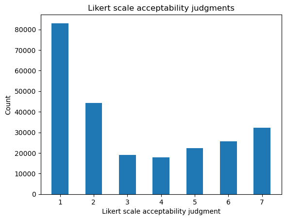
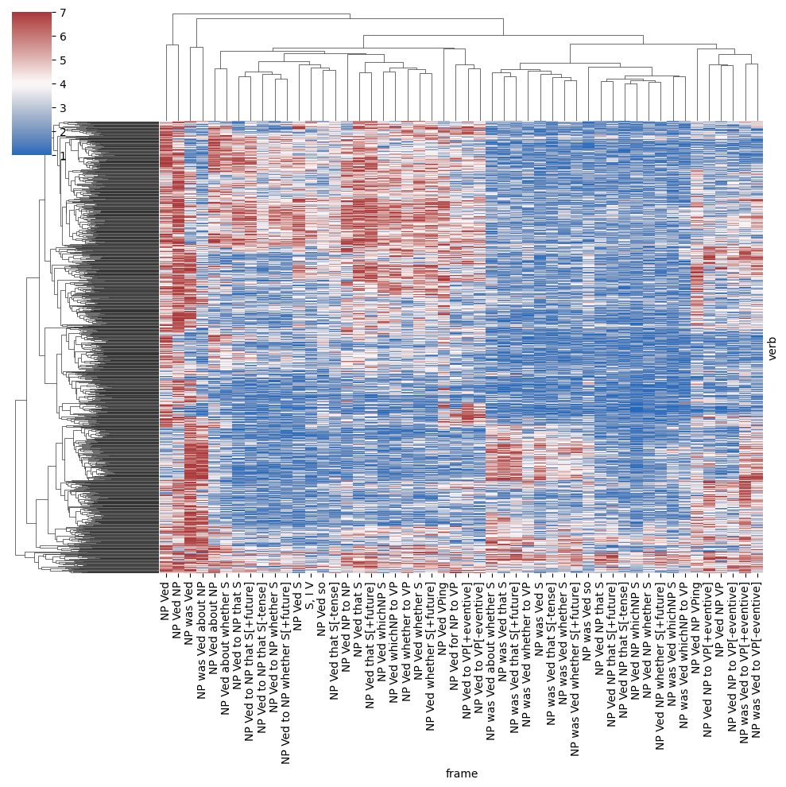

Download the data
!wget http://megaattitude.io/projects/mega-acceptability/mega-acceptability-v1.zip -P data/
!unzip data/mega-acceptability-v1.zip -d data/
data_dir = "./data/mega-acceptability-v1/"Lohninger and Wurmbrand (to appear) review evidence from a variety of both “functional-typological and structural-grammatical approaches to complementation” (Givón 1980; Cristofaro and Cristofaro 2005; Noonan 2007; Dixon 2009; Wurmbrand and Lohninger 2023) that “…there is a possibly universal implicational complementation hierarchy which is defined semantically and detectable through a diverse set of grammatical properties” and that “[w]hile the distribution of morphosyntactic properties varies significantly across languages, the semantic grouping of complement types shows a (more) stable distribution” (ibid, p. 33). The argue specifically that, while “different classification systems arise” in different works “[d]epending on the scope, focus and terminology of an approach”, “a common property found in all approaches, in one form or another, is that complementation configurations are ranked along some kind of hierarchy” (ibid, p. 2).
In this module, we’ll consider how we might develop a model that encodes this notion of hierarchy as a means of testing this idea at the scale of an entire lexicon. We of course won’t be able to assess the idea cross-linguistically; but since all of these approaches make predictions of hierarchy language-internally, we will be able to probe it’s ability to cover English.
We’ll use the MegaAcceptability dataset–collected by White and Rawlins (2016) and reported on in detail by White and Rawlins (2020).
!wget http://megaattitude.io/projects/mega-acceptability/mega-acceptability-v1.zip -P data/
!unzip data/mega-acceptability-v1.zip -d data/
data_dir = "./data/mega-acceptability-v1/"import os
from pandas import DataFrame, read_csv
def load_data(fname: str, verbose: bool = True) -> DataFrame:
# read the raw data skipping comment rows at the beginning
data = read_csv(fname, sep="\t")
if verbose:
n_datapoints = data.shape[0]
print(f"The full dataset has {n_datapoints} datapoints.")
# remove non-native speakers
if "nativeenglish" in data.columns:
data = data.query("nativeenglish")
if verbose:
n_datapoints_native = data.shape[0]
print(f"Removing {n_datapoints - n_datapoints_native} "
"responses from nonnative speakers.")
# remove NaN judgments
data = data.query("~response.isnull()")
if verbose:
n_datapoints_nonnull = data.shape[0]
print(f"Removing {n_datapoints_native - n_datapoints_nonnull} NA responses.")
return dataMost importantly for our purposes, the dataset contains the verb and frame instantiated in the sentence that each participant rated on a 1-7 Likert response scale.1
data = load_data(os.path.join(data_dir, "mega-acceptability-v1.tsv"))
data[["participant", "verb", "frame", "sentence", "response"]].head()The full dataset has 250000 datapoints.
Removing 600 responses from nonnative speakers.
Removing 10 NA responses.| participant | verb | frame | sentence | response | |
|---|---|---|---|---|---|
| 0 | 4 | turn_out | NP was Ved whichNP to VP | Someone was turned out which thing to do. | 2.0 |
| 1 | 381 | turn_out | NP was Ved whichNP to VP | Someone was turned out which thing to do. | 1.0 |
| 2 | 395 | turn_out | NP was Ved whichNP to VP | Someone was turned out which thing to do. | 2.0 |
| 3 | 621 | turn_out | NP was Ved whichNP to VP | Someone was turned out which thing to do. | 1.0 |
| 4 | 527 | turn_out | NP was Ved whichNP to VP | Someone was turned out which thing to do. | 1.0 |
The full distribution of ratings is similar to the one we saw for Sprouse et al.’s Experiments 1 and 3 in the sense that it shows that, in general, subjects prefer the ends of the scale. It differs mainly in the fact that there is a substantial bias toward 1 responses.
from numpy import arange
from matplotlib.pyplot import subplot
ax = subplot()
ax.hist(data.response, bins=arange(1, 9), rwidth=0.5, align="left")
ax.set_title("Likert scale acceptability judgments (MegaAcceptability)")
ax.set_xlabel("Judgment")
_ = ax.set_ylabel("Count")
This bias is perhaps unsurprising in light of the way that the dataset was constructed: many of the verb-frame combinations are bound to be bad together; and it gives a sense for how “sparse” the verb-frame acceptability matrix we attempt to estimate using our models is likely to be. On average, the mean response for each verb-frame pair is below 4.
import warnings
warnings.filterwarnings("ignore")
from numpy import round, corrcoef
from pandas import Series
from seaborn import clustermap
verb_frame_means = data.pivot_table(
index="verb", columns="frame", values="response"
)
_ = clustermap(
verb_frame_means, cmap="vlag", figsize=(10, 10),
center=4, xticklabels=True, yticklabels=False
)
For reasons discussed in Module 1, we need to be careful in interpreting this sparsity–not least because there were many distinct lists and the distribution of true acceptability in the list almost certainly affected how subjects calibrated to the response scale. And so, following White and Rawlins (2016), we’ll integrate an ordered logistic likelihood into all of our models. We’ll first reimplement the model proposed by White and Rawlins (2016), then incrementally extend it to model the idea of homomorphic hierarchies of semantic and syntactic types discussed by Lohninger and Wurmbrand (to appear).
White and Rawlins (2016) model the ordinal acceptability judgments \(r_n\) associated with a sentence \(\text{sent}(n)\) to be a function of the probability \(\alpha_{vf}\) that the main clause verb \(v = \text{verb}(n)\) in \(\text{sent}(n)\) is acceptable in the syntactic frame \(f = \text{frame}(i)\) instantiated in \(\text{sent}(n)\). They model this probability as a function of two other kinds of probability: (i) the probability \(\lambda_{vs}\) that a particular verb \(v\) can have a particular semantic type \(s\); and (ii) the probability \(\pi_{fs}\) that a particular semantic type \(s\) can be mapped onto a particular syntactic frame \(f\). We’ll refer to the collection of these \(\lambda_{vs}\)s and \(\pi_{fs}\)s as matrices \(\boldsymbol\Lambda \in [0, 1]^{V \times K_\text{semtype}}\) and \(\boldsymbol\Pi \in [0, 1]^{F \times K_\text{semtype}}\), where \(V\) and \(F\) are the numbers of verbs and frames, respectively.
The basic idea is that we should predict a verb to be good–modulo other factors (Grimshaw 1979), such as its case assignment properties (Pesetsky 1991)–in a particular syntactic frame insofar as it can have at least one semantic type signature that maps onto that frame. That is, they define the probability \(\alpha_{vf}\) that a main clause verb \(v\) is acceptable in a syntactic frame \(f\) to be \(p\left(\bigvee_s l_{vs} \land b_{fs}\right)\), where:
\[\begin{align*} l_{vs} &= \begin{cases} \top & \text{if } v \text{ can have semantic type signature } s\\ \bot & \text{otherwise} \end{cases}\\ b_{fs} &= \begin{cases} \top & \text{if } s \text{ can map onto syntactic frame } f\\ \bot & \text{otherwise} \end{cases} \end{align*}\]
As with \(\boldsymbol\Lambda\) and \(\boldsymbol\Pi\), we can view the collection of \(l_{vs}\)s and \(b_{fs}\)s as boolean matrices \(\mathbf{L} \in \mathbb{B}^{V \times K_\text{semtype}}\) \(\mathbf{B} \in \mathbb{B}^{F \times K_\text{semtype}}\).
Insofar as a verb’s having a particular type signature is independent of that type signature mapping onto a particular syntactic frame, this probability can be rewritten into an expression in terms of \(\lambda_{vs}\) and \(\pi_{fs}\):
\[\begin{align*} p\left(\bigvee_s l_{vs} \land b_{fs}\right) &= p\left(\lnot\lnot\bigvee_s l_{vs} \land b_{fs}\right)\\ &= 1 - p\left(\lnot\bigvee_s l_{vs} \land b_{fs}\right)\\ &= 1 - p\left(\bigwedge_s \lnot\left[ l_{vs} \land b_{fs}\right]\right)\\ &= 1 - \prod_s p\left(\lnot\left[ l_{vs} \land b_{fs}\right]\right)\\ &= 1 - \prod_s 1 - p\left(l_{vs} \land b_{fs}\right)\\ &= 1 - \prod_s 1 - p\left(l_{vs}\right)p\left(b_{fs}\right)\\ &= 1 - \prod_s 1 - \lambda_{vs}\pi_{fs}\\ \end{align*}\]
As we saw in Module 2, this form coresponds to a probabilistic fuzzy logic disjunction over the semantic types. That is, if we interpret \(\lor\) and \(\land\) as probabilistic fuzzy logic disjunction, we can write:
\[\alpha_{vf} = \bigvee_s \lambda_{vs} \land \pi_{fs} = 1 - \prod_s 1 - \lambda_{vs}\pi_{fs}\]
Importantly, they assume: (a) that verbs can be compatible with multiple semantic type signatures; (b) that multiple semantic type signatures can map onto the same frame; and (c) that multiple frames can be mapped onto by the same semantic type signature. So \(\sum_s \lambda_{vs}\) and \(\sum_s \pi_{fs}\) can be anywhere between \(0\) and the number of type signatures, and \(\sum_f \pi_{fs}\) can be anywhere between \(0\) and the number of syntactic frames. None of the three need to be \(1\).
Solving for \(\boldsymbol\Lambda\) and \(\boldsymbol\Pi\), from which \(\alpha_{vf}\) can be computed deterministically, is an instance of a matrix factorization problem–of which principal component analysis [PCA; Pearson (1901)], factor analysis, and postive/non-negative matrix factorization (Paatero and Tapper 1994) are common forms.
In matrix factorization, we assume some matrix \(\mathbf{Y} \in \mathbb{R}^{N \times M}\) whose elements \(y_{nm} \sim f(x_{nm}, \boldsymbol\theta)\) for some distribution \(f\). The matrix \(\mathbf{X}\) is itself factorized (or decomposed) into two matrices \(\mathbf{U} \in \mathbb{R}^{N \times K}\) and \(\mathbf{V} \in \mathbb{R}^{K \times M}\) such that \(\mathbf{X} \equiv \mathbf{UV}\). For instance, in factor analysis (FA), \(f \equiv \mathcal{N}\) and \(\boldsymbol\theta \equiv \sigma^2\); and in postive/non-negative matrix factorization, all the matrices are constrained to contain positive/non-negative reals, with \(f \equiv \text{HalfNormal}\) and \(\boldsymbol\theta \equiv \sigma^2\).
To see why we can think of the model presented by White and Rawlins (2016) as a form of matrix factorization, remember that, to say that \(\mathbf{X} \equiv \mathbf{UV}\) is just to say that \(x_{ij} = \sum_k u_{ik} \cdot v_{kj}\) for all \(i, j\). If we simply replace \(\sum\) with \(\bigvee\) and \(\cdot\) with \(\land\), we get exactly the form used by White and Rawlins.2 The distribution \(f\) is then defined as an ordered logistic, whose auxiliary parameters are the by-subject cutpoints.
As in Module 1 and White and Rawlins’ model, we’ll us an ordered logistic likelihood to model how participants make responses on the basis of \(\alpha_{vf}\). In contrast to the model in Module 1, however, we will implement all cutpoints as subject-specific, and we’ll place an exponential prior on their distances.
\[C_{sr} - C_{s(r-1)} \sim \text{Gamma}\left(a^\text{jump}_r, b^\text{jump}_r\right)\]
We’ll furthermore learn an offset for each subjects’ cutpoints \(o_s \sim \text{Gamma}\left(a^\text{center}_r, b^\text{center}_r\right)\) so that \(C_{s1} = -o_s\). This assumption is important because, following White and Rawlins (2016), we assume that the value getting binned is \(\text{logit}(\alpha_{vf})\), rather than \(\alpha_{vf}\) itself. The reasoning behind this assumption has to do with the fact that we can’t simply bin directly on \([0, 1]\) due to the assumption that the noise term implicit in an ordered logistic is assumed to be distributed standard logistic and therefore most of the middle categories would get very little probability.3
We can implement this model in STAN fairly straightforwardly.
data {
int<lower=0> N_verb; // number of verbs
int<lower=0> N_frame; // number of frames
int<lower=0> N_component; // number of components
int<lower=0> N_subj; // number of subjects
int<lower=0> N_resp; // number of responses
int<lower=0> N_resp_levels; // number of ordinal response levels
int<lower=1,upper=N_verb> verb[N_resp]; // the verb associated with respone n
int<lower=1,upper=N_frame> frame[N_resp]; // the frame associated with respone n
int<lower=1,upper=N_subj> subj[N_resp]; // the subject associated with respone n
int<lower=1,upper=N_resp_levels> resp[N_resp]; // the response
}parameters {
// the relationship between a {verb, frame} and a component
matrix<lower=0,upper=1>[N_verb,N_component] verb_component;
matrix<lower=0,upper=1>[N_frame,N_component] frame_component;
// the subjects cutpoint center
vector<lower=0>[N_subj] subj_center;
// the alpha and beta parameter for the jump distribution
vector<lower=0>[N_resp_levels-1] subj_alpha;
vector<lower=0>[N_resp_levels-1] subj_beta;
// cutpoint distances for each subject
matrix<lower=0>[N_subj,N_resp_levels-2] jumps;
}transformed parameters {
// compute the cutpoints by taking a cumulative sum
matrix[N_resp_levels-1,N_subj] cutpoints;
for (s in 1:N_subj) {
for (c in 1:(N_resp_levels-1)) {
if (c == 1) {
cutpoints[c,s] = 0.0 - subj_center[s];
} else {
cutpoints[c,s] = cutpoints[c-1,s] + jumps[s,c-1] - subj_center[s];
}
}
}
// component the verb-frame acceptability
matrix[N_verb,N_frame] verb_frame;
for (v in 1:N_verb) {
for (f in 1:N_frame) {
verb_frame[v,f] = 1.0;
for (c in 1:N_component) {
verb_frame[v,f] *= 1.0 - verb_component[v,c] * frame_component[f,c];
}
}
}
verb_frame = 1.0 - verb_frame;
// compute the log-odds
// used as a parameter of the ordered logistic
vector[N_resp] mu;
for (n in 1:N_resp) {
mu[n] = logit(verb_frame[verb[n],frame[n]]);
}
}model {
// sample the centers
subj_center ~ gamma(subj_alpha[1], subj_beta[1]);
// sample the cutpoint distances
for (j in 1:(N_resp_levels-2))
jumps[,j] ~ gamma(subj_alpha[j+1], subj_beta[j+1]);
// sample the responses
for (n in 1:N_resp) {
resp[n] ~ ordered_logistic(mu[n], cutpoints);
}
}One issue with the implementation in STAN is that sampling under this parameterization turns out to be infeasible, so we need to turn to the sort of optimization discussed in the last section. STAN supports this sort of optimization, but (as far I know) it does not support stochastic gradient ascent/descent.4
Using torch will give us the ability to implement MAP estimation with stochastic gradient descent. We basically need to design two components: (i) a torch.nn.Module, which is effectively used as a container for our models parameters that also specifies the analogue of STAN’s transformed parameters block; and (ii) a trainer class that computes the posterior of those parameters against some data and runs stochastic gradient descent.5 We’ll specify the first here and the second in the next section.
We’ll first specify a dataclass representing the data.
from dataclasses import dataclass
@dataclass
class SelectionData:
verb: ndarray
frame: ndarray
subj: ndarray
resp: ndarrayWe’ll also specify dataclasses that declare the paremeters that the model needs to have access to. We’ll use SelectionModelParametersABC across all of our models.
@dataclass
class SelectionModelParametersABC:
n_verb: int
n_frame: int
n_subj: int
n_resp_levels: int
@dataclass
class SelectionModelParameters(SelectionModelParametersABC):
n_component: intFinally, we’ll implement the module.
from typing import Optional
from torch import manual_seed
from torch import randn
from torch.nn import Module
ZERO = 1e-3
ONE = 1. - ZERO
class SelectionModel(Module):
parameter_class = SelectionModelParameters
data_class = SelectionData
def __init__(self, parameters: SelectionModelParameters):
super().__init__()
self.model_parameters = parameters
# prior parameters
self.verb_component_prior_mean_aux = torch.nn.Parameter(
randn(parameters.n_component),
requires_grad=True
)
self.frame_component_prior_mean_aux = torch.nn.Parameter(
randn(parameters.n_component),
requires_grad=True
)
self.verb_component_prior_precision_aux = torch.nn.Parameter(
randn(parameters.n_component),
requires_grad=True
)
self.frame_component_prior_precision_aux = torch.nn.Parameter(
randn(parameters.n_component),
requires_grad=True
)
# latent matrices
self.verb_component_aux = torch.nn.Parameter(
randn([
parameters.n_verb, parameters.n_component
]),
requires_grad=True
)
self.frame_component_aux = torch.nn.Parameter(
randn([
parameters.n_frame, parameters.n_component
]),
requires_grad=True
)
# likelihood parameters
self.log_jumps = torch.nn.Parameter(
torch.ones([
parameters.n_subj, parameters.n_resp_levels-1
]),
requires_grad=True
)
def forward(self, data: SelectionData):
# compute the verb frame probabilities
verb_frame_prob = self.verb_frame_prob(
data.verb, data.frame,
clamp=True
)
# apply a logit to those probabilities
verb_frame_logodds = torch.log(verb_frame_prob) -\
torch.log(1. - verb_frame_prob)
# compute the jumps for each subject
jumps = self.jumps[data.subj]
# return the ordered logistic probabilities
return ordered_logistic_likelihood(
verb_frame_logodds, jumps
)
def verb_frame_prob(
self,
verb_idx: Optional[ndarray] = None,
frame_idx: Optional[ndarray] = None,
clamp: bool = False
) -> Tensor:
if verb_idx is not None or frame_idx is not None:
acc = 1. - torch.prod(
1. - self.verb_component_prob[verb_idx,:] *
self.frame_component_prob[frame_idx,:],
axis=1
).clamp(ZERO, ONE)
elif verb_idx is None and frame_idx is not None:
acc = 1. - torch.prod(
1. - self.verb_component_prob[:,None,:] *
self.frame_component_prob[:,frame_idx,:],
axis=2
).clamp(ZERO, ONE)
elif verb_idx is not None and frame_idx is None:
acc = 1. - torch.prod(
1. - self.verb_component_prob[verb_idx,None,:] *
self.frame_component_prob[None,:,:],
axis=2
).clamp(ZERO, ONE)
else:
acc = 1. - torch.prod(
1. - self.verb_component_prob[:,None,:] *
self.frame_component_prob[None,:,:],
axis=2
)
if clamp:
return acc.clamp(ZERO, ONE)
else:
return acc
@property
def verb_component_prob(self) -> Tensor:
return torch.sigmoid(self.verb_component_aux)
@property
def frame_component_prob(self) -> Tensor:
return torch.sigmoid(self.frame_component_aux)
@property
def jumps(self):
return torch.exp(self.log_jumps)
@property
def verb_component_prior_mean(self):
return torch.sigmoid(self.verb_component_prior_mean_aux)
@property
def frame_component_prior_mean(self):
return torch.sigmoid(self.frame_component_prior_mean_aux)
@property
def verb_component_prior_precision(self):
return torch.exp(self.verb_component_prior_precision_aux)
@property
def frame_component_prior_precision(self):
return torch.exp(self.frame_component_prior_precision_aux)As mentioned by White and Rawlins (2016), this model of selection is very coarse-grained in that it fails to capture that both semantic and syntactic types have structure. This structure is important in the current context because the hypotheses that Lohninger and Wurmbrand (to appear) present make important reference to the relationship between particular elements (or primitive types) that constitute a structured (or complex) type. For instance, Wurmbrand and Lohninger (2023) suggest that, while particular languages may make finer-grained distinctions, there are three coarse-grained semantic types that are mapped monotonically to three coarse-grained syntactic types, both ordered by some notion of containment (Ramchand and Svenonius 2014).
To incorporate this idea of structure into our models, the first thing we need to figure out is how to represent the distinction between a primitive type and a complex type. As I mentioned in introducing the non-parametric prior we added to White and Rawlins’ model, in formal semantics following Montague (1973), we tend to assume that complex semantic types \(\mathcal{T} \equiv \bigcup_{j=1}^\infty \mathcal{T}_j\) are inductively defined in terms of some finite set of primitive types \(\mathcal{T}_0\) and \(\mathcal{T}_i = \left[\bigcup_{j=1}^{i-1} \mathcal{T}_j\right]^2\).
from typing import Generator, Union, Tuple, Set
from collections import defaultdict
from itertools import product
PrimitiveType = str
ComplexType = Union[PrimitiveType, Tuple['ComplexType', 'ComplexType']]
def natural_numbers() -> Generator[int, None, None]:
"""The natural numbers excluding 0"""
i = 0
while True:
i += 1
yield i
def complex_types(
primitive_types: Set[PrimitiveType], max_size: Optional[int] = None
) -> Generator[ComplexType, None, None]:
types = defaultdict(list)
for t in primitive_types:
types[0].append(t)
yield t
for i in natural_numbers():
if max_size is not None and i > max_size:
break
for j1 in range(i):
for j2 in range(i):
for t in product(types[j1], types[j2]):
types[i].append(t)
yield t
for i, t in enumerate(complex_types({"e", "t"})):
if i < 20:
print(t)
else:
breakt
e
('t', 't')
('t', 'e')
('e', 't')
('e', 'e')
('t', 't')
('t', 'e')
('e', 't')
('e', 'e')
('t', ('t', 't'))
('t', ('t', 'e'))
('t', ('e', 't'))
('t', ('e', 'e'))
('e', ('t', 't'))
('e', ('t', 'e'))
('e', ('e', 't'))
('e', ('e', 'e'))
(('t', 't'), 't')
(('t', 't'), 'e')A similar approach is taken to syntactic structures in combinatory categorial grammar, where directed type constructors \ and / are added (see Steedman and Baldridge 2011 and references therein).
TypeConstructor = str
ComplexType = Union[PrimitiveType, Tuple['ComplexType', TypeConstructor, 'ComplexType']]
def natural_numbers() -> Generator[int, None, None]:
"""The natural numbers excluding 0"""
i = 0
while True:
i += 1
yield i
def complex_types(
primitive_types: Set[PrimitiveType],
type_constructors: Set[TypeConstructor],
max_size: Optional[int] = None
) -> Generator[ComplexType, None, None]:
types = defaultdict(list)
for t in primitive_types:
types[0].append(t)
yield t
for i in natural_numbers():
if max_size is not None and i > max_size:
break
for j1 in range(i):
for j2 in range(i):
for t in product(types[j1], type_constructors, types[j2]):
types[i].append(t)
yield t
for i, t in enumerate(complex_types({"NP", "S"}, {r"\\", "/"})):
if i < 20:
print(t)
else:
breakNP
S
('NP', '\\\\', 'NP')
('NP', '\\\\', 'S')
('NP', '/', 'NP')
('NP', '/', 'S')
('S', '\\\\', 'NP')
('S', '\\\\', 'S')
('S', '/', 'NP')
('S', '/', 'S')
('NP', '\\\\', 'NP')
('NP', '\\\\', 'S')
('NP', '/', 'NP')
('NP', '/', 'S')
('S', '\\\\', 'NP')
('S', '\\\\', 'S')
('S', '/', 'NP')
('S', '/', 'S')
('NP', '\\\\', ('NP', '\\\\', 'NP'))
('NP', '\\\\', ('NP', '\\\\', 'S'))So both complex semantic types and complex syntactic types can be viewed as binary trees with type constructors as the non-terminals and the primitive types as the terminals.
We could imagine stating the generalizations described by Lohninger and Wurmbrand (to appear) in terms of ordered equivalence classes on these sorts of types. What’s crucial in this case is that the types form an equivalence class–not which types are contained in each class. So really we just want to be able to represent the equivalence class, which we can do without recognizing its constituency. That is, we can simply view the equivalence classes as primitive (i.e. unstructured) types that potentially have an ordering relation on them (probably determined by their constituency). A simple way to do this is to represent primitive semantic and syntactic types as integers.
Can we get away from having to represent complex types at all then? No. The reason is that clauses are not the only constituents in many of these sentences. For instance, to explain why (1) is more acceptable than (2), we want to be able to appeal to two things: (i) that tell is good with finite clauses–e.g. because its type lives in a semantic equivalence class that maps onto a syntactic equivalence class that can be realized as that something happened; but also (ii) that tell prefers to have a direct object.
So basically, we can’t abstract away all of the structure in the semantic and syntactic types. We need to retain some sorts of structure–e.g. the distinction between direct objects and clausal complements–while abstracting away others–e.g. what exactly the semantic and syntactic type of the clausal complement is in a relatively fine-grained type system like Montague’s. We’ll do this by viewing complex semantic and syntactic types as strings of primitive types. We’ll consider two ways of doing this: one that constrains the explanation of acceptability by an inherent ordering on primitive types and another that is unconstrained by this ordering.
So complex types will be strings of integers. Adding this structure in turn requires us to handle types of different complexity–e.g. that the complex syntactic type associated with (1) contains two primitive types while the one associated with (2) contains two. We’ll do this by thinking of all types as having the same complexity but by introducing the notion of a special null primitive type that “pads out” types of lower complexity.
The second thing we must handle is how to represent some additional relationships that we didn’t have to before.
We’ll need to represent the relationship between semantic and syntactic primitive types as well as the relationship between syntactic primitive types and the constituents that may realize them. We’ll do both using matrices of probabilities similar to the ones we used in implemented White and Rawlins’ model–i.e. that are interpreted representing the probability that a particular object can be associated with some other object.
We’ll represent the relationship between semantic and syntactic primitive types in a matrix of probabilities \(\boldsymbol\Phi^\text{synsem} \in [0, 1]^{(K_\text{sem} + 1) \times (K_\text{syn} + 1)}\), where \(K_\text{sem}\) is the number of semantic primitive types, \(K_\text{syn}\) is the number of syntactic primitive types, and the additional type handles a null type. We’ll assume that null primitive semantic types only map onto null primitive syntactic types–\(\phi^\text{synsem}_{00} = 1\) and \(\phi^\text{synsem}_{0t} = 0\) for all non-null types \(t\)–but we want to allow that null primitive syntactic types can be mapped onto by non-null primitive semantic types.
We need this latter assumption to handle null complement anaphora, as in (4).
Baically, we want to be able to capture that (4) is interpreted as (5).
When the model incorporates ordering on the primitive types, we will constrain the mapping by the ordering by assuming that each non-null primitive type \(t\) is associated with some probability distribution over \(K_\text{rank}\) ranks \(\chi^\text{synsem} \sim \text{OrderedLogistic}(\zeta_t^\text{sem}, \mathbf{\kappa})\) and that \(\phi^\text{synsem}_{tt'} \equiv \mathbb{P}\left(\chi_{t} = \chi_{t'}\right) = \sum_i \mathbb{P}\left(\chi_{t} = i\right)\mathbb{P}\left(\chi_{t'} = i\right)\). For instance, for wurmbrand_implicational_2023, \(K_\text{rank} = 3\).
We’ll represent the relationship between syntactic primitive types and the constituents that may realize them in a similar way: a matrix of probabilities \(\boldsymbol\Phi^\text{syn} \in [0, 1]^{(K_\text{syn} + 1) \times K_\text{const}}\). We’ll assume that \(\phi^\text{syn}_{0i} = 0\) for all constituents \(i\)–i.e. that the null type doesn’t map to any constituent–and that frames are decomposed into constituents in the following way (expand to see the frame-to-constituent mapping).
from collections import OrderedDict
frame_to_constituents = OrderedDict({
'NP was Ved whichNP to VP': {
("NP_subj", "NP_obj", "whichNP to VP"),
("NP_obj", "whichNP to VP")
},
'NP Ved for NP to VP': {
("NP_subj", "for NP to VP"),
("NP_subj", "PP_for", "to VP")
},
'NP Ved NP to VP[+eventive]': {
("NP_subj", "NP to VP[+eventive]"),
("NP_subj", "NP_obj", "to VP[+eventive]")
},
'NP was Ved whether to VP': {
("NP_subj", "NP_obj", "whether to VP"),
("NP_obj", "whether to VP")
},
'NP Ved to VP[+eventive]': {
("NP_subj", "to VP[+eventive]")
},
'NP Ved NP to NP': {
("NP_subj", "NP_obj", "NP_iobj")
},
'NP Ved NP that S': {
("NP_subj", "NP_obj", "that S")
},
'NP was Ved about NP': {
("NP_subj", "NP_obj", "about NP") ,
("NP_obj", "about NP")
},
'NP was Ved that S[-tense]': {
("NP_subj", "NP_obj", "S[-tense]") ,
("NP_obj", "S[-tense]")
},
'NP Ved to NP that S[+future]': {
("NP_subj", "NP_iobj", "that S[+future]")
},
'NP Ved whether to VP': {
("NP_subj", "whether to VP")
},
'NP Ved whichNP to VP': {
("NP_subj", "whichNP to VP")
},
'NP Ved about whether S': {
("NP_subj", "about whether S")
},
'NP Ved whichNP S': {
("NP_subj", "whichNP S")
},
'NP Ved that S[-tense]': {
("NP_subj", "that S[-tense]")
},
'NP Ved whether S[+future]': {
("NP_subj", "whether S[+future]")
},
'NP was Ved that S[+future]': {
("NP_subj", "NP_obj", "that S[+future]") ,
("NP_obj", "that S[+future]")
},
'NP Ved to NP whether S': {
("NP_subj", "NP_iobj", "whether S")
},
'NP Ved': {
("NP_subj",)
},
'NP Ved NP to VP[-eventive]': {
("NP_subj", "NP to VP[-eventive]"),
("NP_subj", "NP_obj", "to VP[-eventive]"),
("NP_subj", "NP to VP[-eventive]")
},
'NP was Ved so': {
("NP_obj", "so"),
("NP_subj", "NP_obj", "so")
},
'NP Ved so': {
("NP_subj", "so")
},
'NP Ved NP that S[+future]': {
("NP_subj", "NP_obj", "that S[+future]")
},
'NP Ved NP whether S[+future]': {
("NP_subj", "NP_obj", "whether S[+future]")
},
'NP Ved to NP whether S[+future]': {
("NP_subj", "NP_iobj", "whether S[+future]")
},
'NP was Ved that S': {
("NP_obj", "that S"),
("NP_subj", "NP_obj", "that S")
},
'NP Ved NP whether S': {
("NP_subj", "NP_obj", "whether S")
},
'NP was Ved whether S': {
("NP_obj", "whether S"),
("NP_subj", "NP_obj", "whether S")
},
'NP was Ved to VP[-eventive]': {
("NP_obj", "to VP[-eventive]"),
("NP_subj", "NP_obj", "to VP[-eventive]"),
("NP_subj", "NP to VP[-eventive]")
},
'NP Ved NP VP': {
("NP_subj", "NP_obj", "VP"),
("NP_subj", "NP VP")
},
'NP Ved VPing': {
("NP_subj", "VPing")
},
'NP was Ved to VP[+eventive]': {
("NP_obj", "to VP[+eventive]"),
("NP_subj", "NP_obj", "to VP[+eventive]"),
("NP_subj", "NP to VP[+eventive]")
},
'NP Ved NP that S[-tense]': {
("NP_subj", "NP_obj", "that S[-tense]")
},
'NP Ved that S': {
("NP_subj", "that S")
},
'NP was Ved': {
("NP_obj",),
("NP_subj", "NP_obj")
},
'NP Ved S': {
("NP_subj", "S")
},
'NP Ved that S[+future]': {
("NP_subj", "that S[+future]")
},
'NP was Ved about whether S': {
("NP_subj", "NP_obj", "about whether S") ,
("NP_obj", "about whether S")
},
'NP Ved NP': {
("NP_subj", "NP_obj")
},
'NP Ved NP VPing': {
("NP_subj", "NP_obj", "VPing"),
("NP_subj", "NP VPing")
},
'NP Ved NP whichNP S': {
("NP_subj", "NP_obj", "whichNP S")
},
'NP Ved about NP': {
("NP_subj", "about NP")
},
'NP was Ved S': {
("NP_subj", "NP_obj", "S") ,
("NP_obj", "S")
},
'NP Ved to NP that S': {
("NP_subj", "NP_iobj", "that S"),
},
'NP was Ved whether S[+future]': {
("NP_subj", "NP_obj", "whether S[+future]") ,
("NP_obj", "whether S[+future]")
},
'NP Ved whether S': {
("NP_subj", "whether S")
},
'NP was Ved whichNP S': {
("NP_subj", "NP_obj", "whichNP S") ,
("NP_obj", "whichNP S")
},
'NP Ved to NP that S[-tense]': {
("NP_subj", "NP_iobj", "that S[-tense]")
},
'NP Ved to VP[-eventive]': {
("NP_subj", "to VP[-eventive]")
}
})
data = data[data.frame.isin(frame_to_constituents)]The thing to notice about these frame decompositions is that different frames have different possible parses. For instance, (6) should have the same parse as (1), but (7) might have the same parse as (8) or it might have a parse analogous to the clearly adjectival (9).
So we need to represent that a particular syntactic type may map onto any of these parses and still be good. We’ll discuss how to do this shortly in terms of the following mapping from frames to parses to an indicator for whether that constituent is contained in that parse (expand to see). We’ll call this mapping \(\mathbf{C} \in \mathbb{B}^{F \times K_\text{parse} \times K_\text{const}}\), where \(F\) is the number of frames, \(K_\text{parse}\) is the maximum number of parses, and \(K_\text{const}\) is the numberof constituent types.
from numpy import array, zeros, where, isin
from xarray import DataArray
constituents = array(sorted({
c
for tups in frame_to_constituents.values()
for t in tups
for c in t
}))
max_parses = max(
len(t)
for tups in frame_to_constituents.values()
for t in tups
)
frame_to_parse_constituent_indicators = zeros([
len(frame_to_constituents), max_parses, len(constituents)
])
for i, (f, parses) in enumerate(frame_to_constituents.items()):
for j, parse in enumerate(parses):
for k, const in enumerate(parse):
const_idx = where(constituents == const)[0][0]
frame_to_parse_constituent_indicators[i,j,const_idx] = 1.
frame_to_parse_constituent_indicators = DataArray(
frame_to_parse_constituent_indicators,
dims=["frame", "parse", "constituent"],
coords={
"frame": list(frame_to_constituents),
"parse": list(range(max_parses)),
"constituent": constituents,
}
)
frame_to_parse_constituent_indicators<xarray.DataArray (frame: 49, parse: 3, constituent: 27)>
array([[[0., 0., 0., ..., 0., 0., 1.],
[0., 0., 0., ..., 0., 0., 1.],
[0., 0., 0., ..., 0., 0., 0.]],
[[0., 0., 0., ..., 0., 0., 0.],
[0., 0., 0., ..., 0., 0., 0.],
[0., 0., 0., ..., 0., 0., 0.]],
[[0., 0., 1., ..., 0., 0., 0.],
[0., 0., 0., ..., 0., 0., 0.],
[0., 0., 0., ..., 0., 0., 0.]],
...,
[[0., 0., 0., ..., 0., 1., 0.],
[0., 0., 0., ..., 0., 1., 0.],
[0., 0., 0., ..., 0., 0., 0.]],
[[0., 0., 0., ..., 0., 0., 0.],
[0., 0., 0., ..., 0., 0., 0.],
[0., 0., 0., ..., 0., 0., 0.]],
[[0., 0., 0., ..., 0., 0., 0.],
[0., 0., 0., ..., 0., 0., 0.],
[0., 0., 0., ..., 0., 0., 0.]]])
Coordinates:
* frame (frame) <U31 'NP was Ved whichNP to VP' ... 'NP Ved to VP[-e...
* parse (parse) int64 0 1 2
* constituent (constituent) <U19 'NP VP' 'NP VPing' ... 'whichNP to VP'We’ll assume that the relationship between semantic and syntactic primitive types determines the relationship between complex semantic and syntactic types. Specifically, we’ll assume that for complex semantic type \(\mathbf{t}^\text{sem}\) and complex syntactic type \(\mathbf{t}^\text{syn}\), the probability that these types are related is a product of the probabilities that each of there corresponding primitive types (in order) are related:
\[\psi^\text{synsem}_{\mathbf{t}_\text{sem}\mathbf{t}_\text{syn}} \equiv \prod_i \phi^\text{synsem}_{t_i^\text{sem}t_i^\text{syn}}\]
One thing to note about \(\boldsymbol\Psi^\text{synsem}\) in particular is that it has \(2L\) dimensions, where \(L\) is the maximum complexity (i.e. length) of the complex types, which we’ll set to \(3\) based on the maximum number of constituents in the frame decompositions above.
Similarly, we’ll assume that the relationship between syntactic primitive types and constituents that can realize them determines the relationship between complex syntactic types and frames. If we knew the correct parse of the frame \(p\), we could look at each constituent type \(j\), and if the parse contains it, we look at the probability that any primitive semantic type in \(\mathbf{t}\) can map onto it \(1 - \prod_i 1 - c_{fpj}^\text{const}\phi^\text{syn}_{t_i^\text{syn}j}\); otherwise, we ignore it \(1-c_{fpj}\).
\[\bar{\psi}^\text{syn}_{\mathbf{t}^\text{syn}fp} \equiv \prod_j (1-c_{fpj}) + 1 - \prod_i 1 - c_{fpj}^\text{const}\phi^\text{syn}_{t_i^\text{syn}j}\]
But since we also need to consider alternative parses for a particular frame \(f\), we additionally need to take the above expression and embed it in a disjunction over parses:
\[\psi^\text{syn}_{\mathbf{t}^\text{syn}f} \equiv 1 - \prod_p 1 - \bar{\psi}^\text{syn}_{\mathbf{t}^\text{syn}fp}\]
Effectively, what we are computing here is the probability that, if we look across parses, there is a constituent that could be mapped onto by at least one of the types.
One potential issue with this particular form is that it doesn’t not enforce a one-to-one relationship between syntactic types and constituents. We do enforce that every constituent must be mapped onto by some primitive syntactic type contained in the complex type–but not that each such primitive syntactic type maps onto a single constituent. This is a potential problem, since we don’t want a single syntactic type to map to no or multiple constituents (assuming we’ve correctly laid out all possible parses). We could do this by adding an extra condition to the expression, but we won’t for now. We’ll return to this problem in Module 4, when we consider mappings from thematic roles to syntactic positions.
Finally, we need some way of representing the relationship between a verb and a complex semantic type and the relationship between a frame and a complex syntactic type. We’ll do this by extending \(\boldsymbol\lambda_v\) and \(\boldsymbol\pi_f\) from White and Rawlins’ model such that \(\lambda_{v\mathbf{t}}\) tracks the probability of verb \(v\) having complex semantic type \(\mathbf{t}\), and \(\pi_{f\mathbf{t}}\) tracks the probability of frame \(f\) having complex syntactic type \(\mathbf{t}\). \(\boldsymbol\Lambda\) and \(\boldsymbol\Pi\) will thus be represented as tensors, with the first dimension corresponding to verb and frame, respectively, and each subsequent dimension \(d\) representing a primitive type \(t_d\) in position \(d\) of complex type \(\mathbf{t}\).
Finally, we define the acceptability of a verb \(v\) in a frame \(f\) in terms of all of these relationships:
\[\alpha_{vf} \equiv 1 - \prod_{\mathbf{t}_\text{sem},\mathbf{t}_\text{syn}} 1 - \lambda_{v\mathbf{t}_\text{sem}}\phi^\text{synsem}_{\mathbf{t}_\text{sem}\mathbf{t}_\text{syn}}\phi^\text{syn}_{\mathbf{t}_\text{syn}f}\pi_{f\mathbf{t}_\text{syn}}\]
To implement the unconstrained variant of our structured type models, we need to specify some additional parameters: our single n_components parameter gets replaced with a specification for the number of semantic (n_primitive_semantic_types) and syntactic (n_primitive_syntactic_types) primitive types, the max_complex_type_size (which we already said would be 3), and the frame_to_parse_constituent_indicators we constructed earlier.
@dataclass
class StructuredSelectionModelParameters(SelectionModelParametersABC):
frame_to_parse_constituent_indicators: ndarray
n_primitive_semantic_types: int
n_primitive_syntactic_types: int
max_complex_type_size: intfrom numpy import prod
from torch import Tensor
class StructuredSelectionModel(Module):
parameter_class = StructuredSelectionModelParameters
data_class = SelectionData
def __init__(self, parameters: StructuredSelectionModelParameters):
super().__init__()
self.model_parameters = parameters
# initialize the verb-complex semantic type probabilities
self._initialize_verb_complex_semantic_type()
# initialize the frame-complex syntactic type probabilities
self._initialize_frame_complex_syntactic_type()
# initialize the semantic-syntactic primitive type map
self._initialize_primitive_type_map()
# initialize the syntactic primitive type-constituent map
syntactic_primitive_type_constituent_map_aux = torch.zeros([
parameters.n_primitive_syntactic_types,
parameters.frame_to_parse_constituent_indicators.shape[2]
])
self.syntactic_primitive_type_constituent_map_aux = torch.nn.Parameter(
syntactic_primitive_type_constituent_map_aux,
requires_grad=True
)
# initialize the cutpoint distances
self.log_jumps = torch.nn.Parameter(
torch.ones([
parameters.n_subj, parameters.n_resp_levels-1
]),
requires_grad=True
)
def _initialize_verb_complex_semantic_type(self):
verb_shape = (self.model_parameters.n_verb,) +\
self.complex_semantic_type_shape
self.verb_complex_semantic_type_aux = torch.nn.Parameter(
torch.randn(verb_shape),
requires_grad=True
)
def _initialize_frame_complex_syntactic_type(self):
frame_shape = (self.model_parameters.n_frame,) +\
self.complex_syntactic_type_shape
self.frame_complex_syntactic_type_aux = torch.nn.Parameter(
torch.randn(frame_shape),
requires_grad=True
)
def _initialize_primitive_type_map(self):
primitive_type_map_aux = randn([
self.model_parameters.n_primitive_semantic_types,
self.model_parameters.n_primitive_syntactic_types + 1
])
self.primitive_type_map_aux = torch.nn.Parameter(
primitive_type_map_aux,
requires_grad=True
)
@property
def complex_semantic_type_shape(self):
return (self.model_parameters.n_primitive_semantic_types+1,) *\
self.model_parameters.max_complex_type_size
@property
def complex_syntactic_type_shape(self):
return (self.model_parameters.n_primitive_syntactic_types+1,)*\
self.model_parameters.max_complex_type_size
def forward(self, data: SelectionData):
verb_frame_prob = self.verb_frame_prob(data.verb, data.frame)
verb_frame_logodds = torch.log(verb_frame_prob) - torch.log(1. - verb_frame_prob)
jumps = self.jumps[data.subj]
return ordered_logistic_likelihood(
verb_frame_logodds, jumps
)
def verb_frame_prob(self, verb_idx: ndarray, frame_idx: ndarray) -> Tensor:
n_verb = self.model_parameters.n_verb
n_frame = self.model_parameters.n_frame
verb_shape = self.complex_semantic_type_shape +\
(1,) * len(self.complex_syntactic_type_shape)
frame_shape = (1,) * len(self.complex_semantic_type_shape) +\
self.complex_syntactic_type_shape
if verb_idx.shape != frame_idx.shape:
raise ValueError
else:
resp_shape = verb_idx.shape[0]
# shape for verbs and frames to complex type signatures
verb_shape = (resp_shape,) + verb_shape
frame_shape = (resp_shape,) + frame_shape
# shape with response dimension inserted into map
synsem_map_shape = (1,) +\
self.complex_semantic_type_shape +\
self.complex_syntactic_type_shape
# shape for broadcasting syn map
syn_map_shape = (resp_shape,) +\
(1,) * self.model_parameters.max_complex_type_size +\
self.complex_syntactic_type_shape
# shape for computing prod on all but the reponse dimension
flat_shape = (resp_shape, prod(synsem_map_shape))
p = self.verb_complex_semantic_type[verb_idx].view(verb_shape) *\
self.frame_complex_syntactic_type[frame_idx].view(frame_shape) *\
self.complex_synsem_type_map.view(synsem_map_shape) *\
self.complex_syn_type_map[frame_idx].view(syn_map_shape)
acc = 1. - (1. - p.view(flat_shape)).prod(axis=1)
acc = acc.clamp(min=ZERO, max=ONE)
return acc
@property
def verb_complex_semantic_type(self) -> Tensor:
return torch.sigmoid(self.verb_complex_semantic_type_aux)
@property
def frame_complex_syntactic_type(self) -> Tensor:
return torch.sigmoid(self.frame_complex_syntactic_type_aux)
@property
def primitive_type_map(self) -> Tensor:
prob = torch.sigmoid(
self.primitive_type_map_aux
)
# the 0th primitive type is the null primitive type and null
# primitive types should only map onto each other
null_map = torch.zeros([
1,
self.model_parameters.n_primitive_syntactic_types + 1,
])
null_map[0,0] = 1.0
return torch.cat([null_map, prob], axis=0)
@property
def complex_synsem_type_map(self):
# only want to compute the transformation implicit in the
# property once
primitive_type_map = self.primitive_type_map
# the final shape of the complex type map
final_shape = primitive_type_map.shape *\
self.model_parameters.max_complex_type_size
shape = (primitive_type_map.shape[0],) +\
(1,) * (self.model_parameters.max_complex_type_size - 1) +\
(primitive_type_map.shape[1],) +\
(1,) * (self.model_parameters.max_complex_type_size - 1)
m = primitive_type_map.view(shape)
for i in range(1, self.model_parameters.max_complex_type_size):
shape = (1,) * i +\
(primitive_type_map.shape[0],) +\
(1,) * (self.model_parameters.max_complex_type_size - (i + 1)) +\
(1,) * i +\
(primitive_type_map.shape[1],) +\
(1,) * (self.model_parameters.max_complex_type_size - (i + 1))
m = m * primitive_type_map.view(shape)
return m
@property
def complex_syn_type_map(self):
parse_constituent_indicators = tensor(
self.model_parameters.frame_to_parse_constituent_indicators
)
primitive_type_map = self.syntactic_primitive_type_constituent_map.transpose(1,0)
# frame x parse x constituent type x primitive type^max_size
indicators_shape = parse_constituent_indicators.shape +\
(1,) * self.model_parameters.max_complex_type_size
map_shape = (1,1,) +\
primitive_type_map.shape +\
(1,) * (self.model_parameters.max_complex_type_size - 1)
m = 1. - primitive_type_map.view(map_shape) *\
parse_constituent_indicators.view(indicators_shape)
for i in range(1, self.model_parameters.max_complex_type_size):
map_shape = (1,1,primitive_type_map.shape[0]) +\
(1,) * i +\
primitive_type_map.shape[1:] +\
(1,) * (self.model_parameters.max_complex_type_size - (i+1))
m = m * (1. - primitive_type_map.view(map_shape) *\
parse_constituent_indicators.view(indicators_shape))
prob = 1. - torch.prod(
1. - torch.prod(
(1.-parse_constituent_indicators.view(indicators_shape)) +
1. - m,
axis=2
), axis=1
)
return prob
@property
def syntactic_primitive_type_constituent_map(self):
prob = torch.sigmoid(
self.syntactic_primitive_type_constituent_map_aux
)
# the 0th primitive type is the null primitive type and null
# primitive types should not map onto any constitutent, we do
# this by multiplying by a special mask
null_map = torch.zeros([
1,
self.model_parameters.frame_to_parse_constituent_indicators.shape[2]
])
return torch.cat([null_map, prob], axis=0)
@property
def jumps(self):
return torch.exp(self.log_jumps)To implement the constrained variant of the above model, we simply need to alter how the mapping from primitive semantic types to primitive semantic types operates.
class ConstrainedStructuredSelectionModel(StructuredSelectionModel):
def _initialize_primitive_type_map(self):
primitive_type_rank_sem_aux = randn([
self.model_parameters.n_primitive_semantic_types
])
self.primitive_type_rank_sem_aux = torch.nn.Parameter(
primitive_type_rank_sem_aux,
requires_grad=True
)
primitive_type_rank_syn_aux = randn([
self.model_parameters.n_primitive_syntactic_types
])
self.primitive_type_rank_syn_aux = torch.nn.Parameter(
primitive_type_rank_syn_aux,
requires_grad=True
)
self.nonnull_sem_to_null_syn_aux = torch.nn.Parameter(
randn(self.model_parameters.n_primitive_semantic_types),
requires_grad=True
)
self.type_rank_log_jumps = torch.nn.Parameter(
randn(
min(
self.model_parameters.n_primitive_syntactic_types - 1,
self.model_parameters.n_primitive_syntactic_types - 1
)
),
requires_grad=True
)
@property
def primitive_type_map(self) -> Tensor:
rank_jumps = torch.exp(self.type_rank_log_jumps)
rank_cuts = torch.cumsum(rank_jumps, axis=0) - rank_jumps[0]
prob_sem = ordered_logistic_likelihood(
self.primitive_type_rank_sem_aux,
rank_cuts[None,:]
)
prob_syn = ordered_logistic_likelihood(
self.primitive_type_rank_syn_aux,
rank_cuts[None,:]
)
prob_prim = (prob_sem[:,None,:] * prob_syn[None,:,:]).sum(2)
null_sem_to_nonnull_syn = torch.zeros([
1,
self.model_parameters.n_primitive_syntactic_types + 1,
])
null_sem_to_nonnull_syn[0,0] = 1.0
nonnull_sem_to_null_syn = torch.sigmoid(
self.nonnull_sem_to_null_syn_aux
)
# the 0th primitive type is the null primitive type and null
# primitive types should only map onto each other, we do this
# by multiplying by a special mask
prob = torch.cat([
nonnull_sem_to_null_syn[:,None],
prob_prim
], axis=1)
return torch.cat([null_sem_to_nonnull_syn, prob], axis=0)To evaluate our models, we will use the MegaOrientation dataset (Moon and White 2020).
!wget http://megaattitude.io/projects/mega-orientation/mega-orientation-v1.1.zip -P data/
!unzip data/mega-orientation-v1.1.zip -d data/
data_dir = "./data/mega-orientation-v1.1/"This dataset aims to capture aspects of the temporal interpretation of sentences containing non-finite complement clauses. Specifically, it focuses on the temporal orientation of the event or state expressed by the matrix predicate relative to the event or state expressed by a predicate in a clause embedded by it. For instance, in (10), we interpret the regretting to hold after the leaving, while in (11), we interpret the wanting to hold before the leaving.
One common diagnostic for this orientation involves manipulation of temporal adverbs. For instance, (12) is good, while (13) is weird.
Conversely, (14) is weird, while (15) is not.
Building on MegaAcceptability, MegaOrientation captures these sorts of judgments.
data_orientation = load_data(os.path.join(data_dir, "mega-orientation-v1.1.tsv"))
data_orientation[["participant", "verb", "frame", "orientation", "sentence", "response"]].head()The full dataset has 44160 datapoints.
Removing 0 responses from nonnative speakers.
Removing 0 NA responses.| participant | verb | frame | orientation | sentence | response | |
|---|---|---|---|---|---|---|
| 0 | 718 | spook | NP was _ed to VP[+eventive] | future | Someone was spooked to do something in the fut... | 4 |
| 1 | 718 | envy | NP was _ed to VP[-eventive] | future | Someone was envied to have something in the fu... | 1 |
| 2 | 718 | confirm | NP _ed VPing | past | Someone will confirm doing something in the past. | 2 |
| 3 | 718 | remind | NP was _ed to VP[-eventive] | future | Someone was reminded to have something in the ... | 3 |
| 4 | 718 | instigate | NP _ed VPing | future | Someone instigated doing something in the future. | 2 |
This dataset is useful for our purposes because it captures a phenomenon that, as noted in Lohninger and Wurmbrand (to appear), is thought to be associated with clause size: the “smaller” a clause is, the more dependent its temporal interpretation is on the temporal interpretation of the matrix clause. So insofar as a model that incorporates an ordering on semantic and syntactic types is a good model, we should expect it to predict these judgments just as well or better than a model that does not assume the ordering.
To implement this evaluation, we will use the \(\boldsymbol\Lambda\) and \(\boldsymbol\Pi\) matrices we learn as a source of predictors in a mixed effects ordered logistic regression.
We started with a relatively straightforward variant of matrix factorization as our model for inducing selection and augmented that out to a model that recognizes structured semantic and syntactic types. In the next section, we’ll fit these models and probe the representations they learn.
In fact, not all predicates found in their sentences are necessarily verbs. Some–e.g. annoy–are likely to be (deverbal) adjectives in some frames. We’ll continue to just refer to these predicates as verbs.↩︎
In fact, when \(\mathbf{U}\) and \(\mathbf{V}\) are boolean matrices and we do this swap, the problem is often referred to as boolean matrix factorization (see Miettinen and Neumann 2020 and references therein).↩︎
We could alternatively learn a positive scaling term \(\beta\) for \(\alpha_{vf}\) that would expand it to be on \([0, \beta]\), but then we introduce an additional parameter that we need to worry about futzing with.↩︎
STAN does use stochastic gradient ascent in its implementation of automatic differentiation variational inference (ADVI). But since I want to demonstrate MAP estimation and how to implement it in the popular torch framework here, I’m not going to use STAN’s implementation of variational inference.↩︎
There are other ways to set things up in torch, but this general approach is relatively common.↩︎